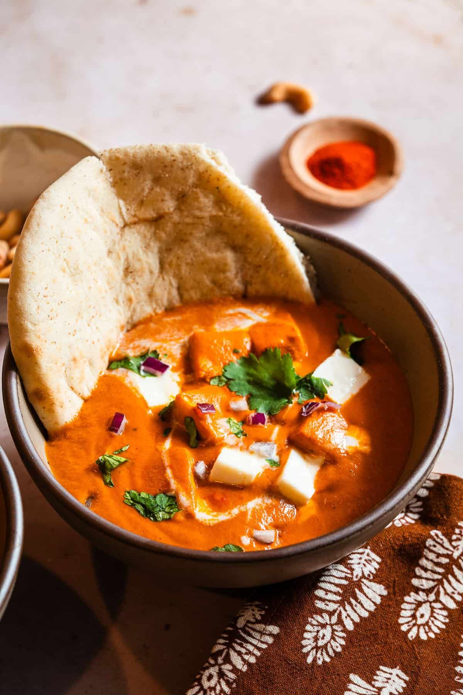

Dal Tadka + Jeera Rice
Yellow lentils with spices, served with cumin rice.30 mins

35 mins
Paneer Butter Masala + Roti
Creamy tomato curry with cottage cheese.35 mins

Rajma Chawal
-Kidney beans curry with steamed rice.40 mins

Vegetable Pulao with Raita
Fragrant rice cooked with mixed veggies.30 mins

Baingan Bharta
Smoky roasted eggplant mashed with spices.35 mins

Pumpkin Sabzi + Roti
Sweet & spicy pumpkin curry25 mins

Quinoa Khichdi
Protein-packed quinoa with lentils & veggies.25 mins

Lauki Chana Dal
Bottle gourd cooked with Bengal gram.30 mins

Millet Vegetable Khichdi
Fiber-rich millet with lentils & veggies.30 mins